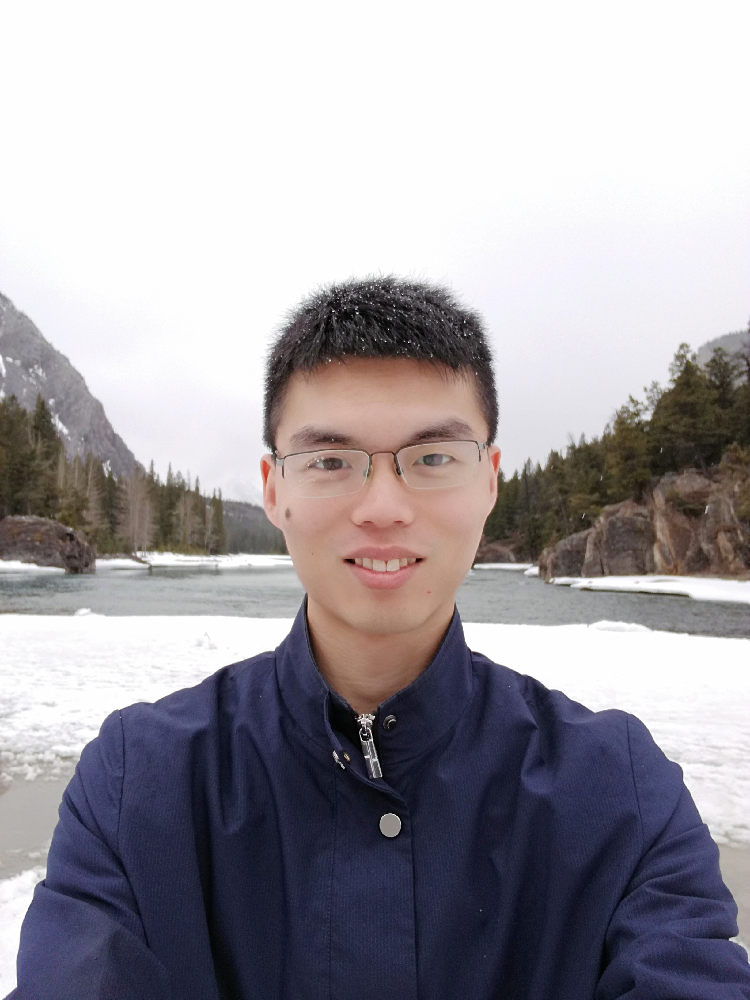

Qiuqiang Kong (孔秋强)
PhD Student
Centre for Vision, Speech and Signal Processing (CVSSP)
University of Surrey
Google Scholar Profile
Email: q.kong@surrey.ac.uk
Research interests
My research concerns audio and music processing with AI: using machine learning and signal processing for analysis, recognition and generation of sounds. My focus is on detection, classification and separation of acoustic scenes and events, particularly real-world sounds, using methods such as deep learning and generative models. My research target is to make a computer to understand audio as humans do.News & Events
01/08/2018: Ranked the 3rd (out of 558 teams) in the DCASE 2018 Task 2 General-purpose audio tagging of Freesound challenge in the private leaderboard of Kaggle challenge (with Turab Iqbal).02-06/08/2018: Presenting the music source separation system in LVA-ICA conference (With Dominic Ward).
24/05/2018: Giving a talk of deep learning in AES 2018 conference, Milan, Italy.
16-20/04/2018: Presenting 3 accepted ICASSP paper in Calgary, Canada.